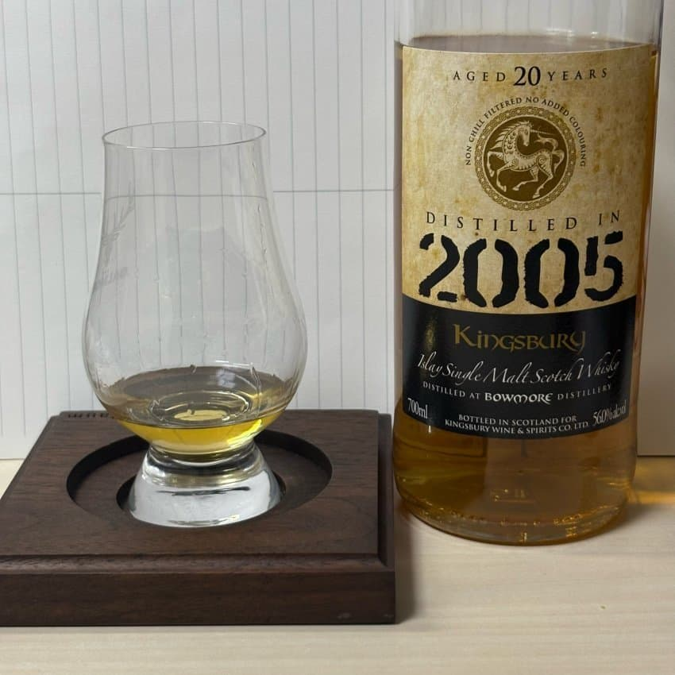

N 크림, 스모키, 오크, 요오드 피트, 다시마, 자두, 복숭아, 산딸기
- 첫인상에서는 꽤나 크리미한 느낌
- 역시나 스모키함이 있다
- 꽤나 직관적인 오크의 향
- 서서히 요오드 피트와 다시마의 향이 올라옴
- 시간이 지나니 빵빵한 자두와 복숭아 향이 느껴짐
- 더 시간이 지나니 산딸기쪽의 상큼한 베리류 향 또한 함께 느껴짐
상큼 달달한 버번캐 향
P 심플시럽, 해조류, 크림 브릴레, 복숭아
- 직관적인 달콤함 마치 심플시럽같음
- 입에서 질감은 약간 오일리한 편
- 해조류쪽의 짭짤한 피트 뉘앙스가 느껴진다
- 진한 크림 브릴레와 황도 복숭아가 강함
복숭아 크림 디저트
F 복숭아, 오크
- 복숭아쪽의 달콤한 향이 매우 지배적
- 이후 쌉쌍한 오크의 향으로 마무리
복숭아와 오크
————————————————————
총평
에어링되니 꽤나 맛있는 버번캐 보모어.
뚜따 초기에는 너무 맵싹하고 다채로운 향이 없기에 실망했지만, 에어링을 거치니 슬슬 포텐이 드러난다.
향에서 가끔 보모어 버번캐 독병에서 실망하는 과한 다시마가 느껴지지 않았으며 꽤나 디저트같은 향과 맛이 매력적이다. 크리미하고 복숭아쪽 버번캐를 좋아한다면 한 잔 먹어볼만한 맛.
————————————————————
재미로 붙여보는 점수는 4.0/5.0 (강한 장점: 크리미하고 복숭아 강한 버전캐 보모어)
기준은
1.0 ~ 2.0: 큰 단점 있음
2.0 ~ 2.5: 약한 단점 있음
2.5 ~ 3.5: 큰 단점 없거나 약한 장점 있음
3.5 ~ 4.0: 장점 있음
4.0 ~ 4.5: 강한 장점 있음
4.5 ~ 5.0: 강한 장점이 있고 감동이 있음
————————————————————
진짜 1년만에 내 바틀 리뷰 쓴듯…
image is not found
댓글 7개